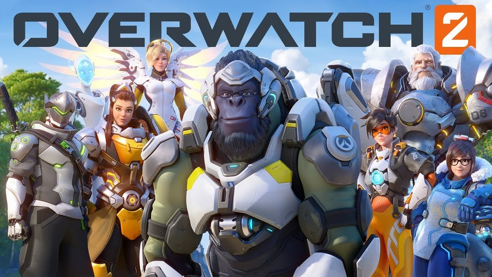

Neste tópico vou falar de vídeo jogos onde ainda gosto até aos dias de hoje, por isso vou enumerar os meus 3 jogos favoritos.
3 - Overwatch 2
Este jogo, resumidamente, é um first shooter jogo do companhia Blizzard Entertainment. O jogo é composto por 2 equipas de 5 jogadores em cada equipa,
o objetivo do jogo diferencia em cada tipo de mapa que é jogado, existem 4 tipos de mapas, KOTH (King of the hill), escort, hybrid e o novo gamemode para substituir o que foi removido
do jogo 2CP, Push. O jogo também é dividido em 3 classes Tank, DPS, Support; o que gosto de jogar mais é support e o meu heróis favorito é Ana e Baptiste.

2 - Elden Ring
Este jogo, resumidamente, é um jogo de ação de RPG desenvolvido pela FromSoftware e publicado pela Bandai Namco Enterteinement, com direção de Hidetaka Miyazaki. O jogo é increvelmemte versátil com um boa história
e neste jogo para além de ser díficil e bastante empolgante de jogar pode-se fazer várias classes e várias maneiras de jogar este jogo. Sendo uma das minhas maneiras favoritas de jogar este jogo é fazer Speedruns.
1 - God of War: Ragnarok
Este é o meu jogo favorito, é um jogo de ação/aventura desenvolvido por Santa Monica Studio, e publicado pela Sony Interactive Entertainement.
Na minha opinião, um dos poucos jogos onde a história é bem sólida, consistente, e muito boa, em termos de jogabilidade também é bastante boa, basicamente este jogo é muito bom.
E como este era um seguimento do primeiro God Of War era para ser melhor que o último e nisso eles conseguiram bem.